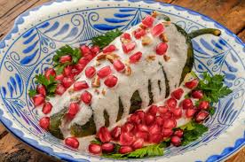

Definicion de Gastronomia en Mexico.
La gastronomía mexicana es una combinacion de tecnicas y habilidades
culinarias con la union y fusión de sabores, colores y texturas que van
de la mano con la combinación de tradiciones, cultura y regiones que
deriva de la cocina de México prehispánico con la comida europeo.
La gastronomia mexicana es la expresion culinaria de Mexico, gracias a
la union de tecnicas y habilidades culinarias de distintas regiones del
pais mexicano con las europeas desde tiempos prehispanicos.
